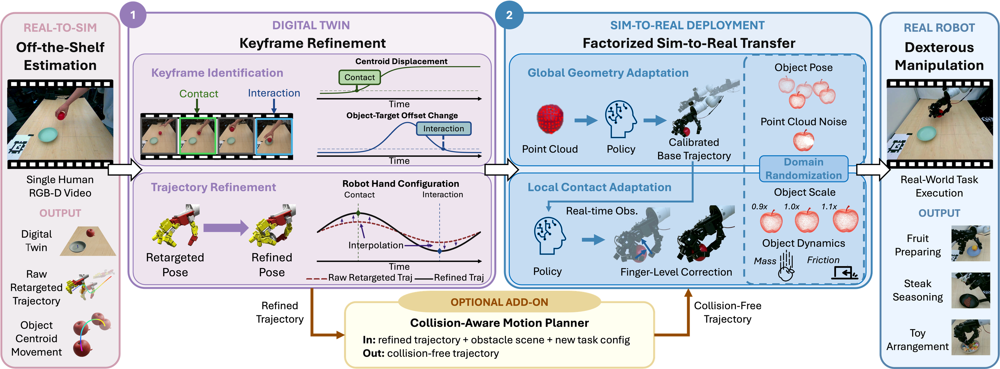
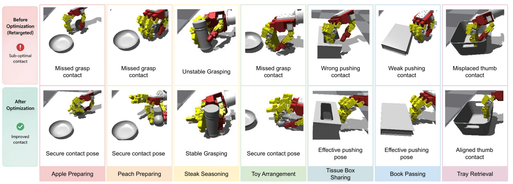
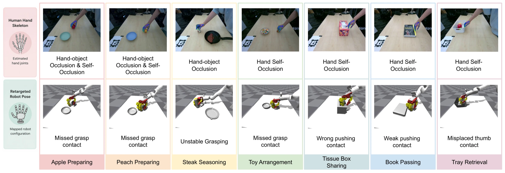
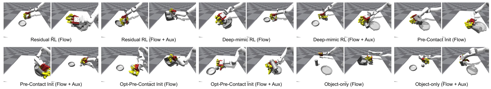
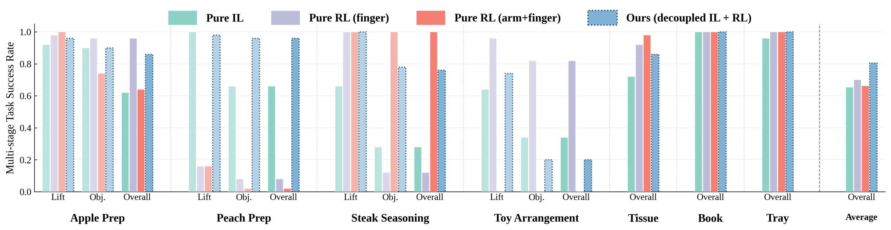
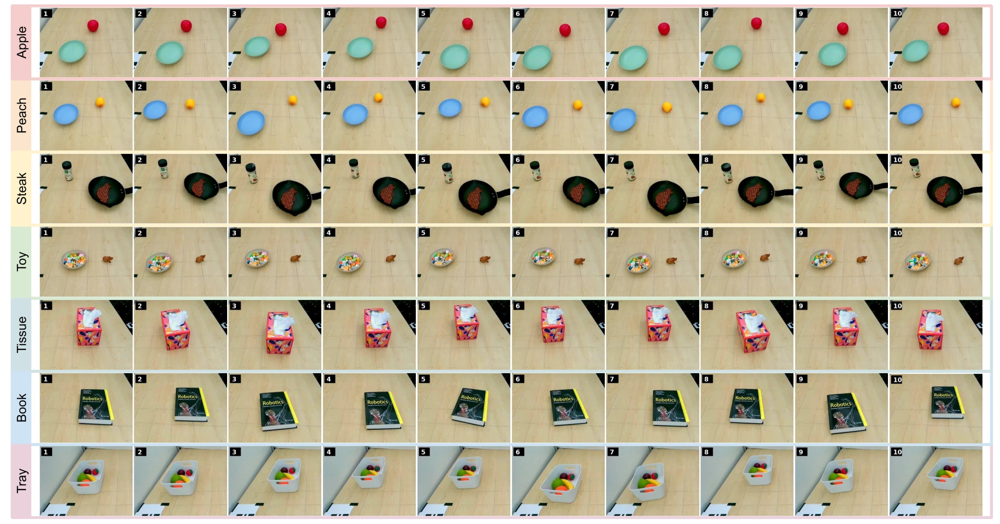
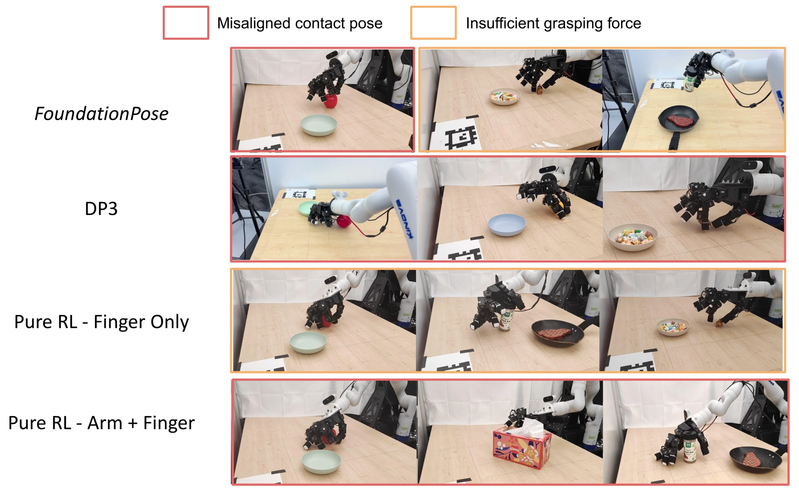
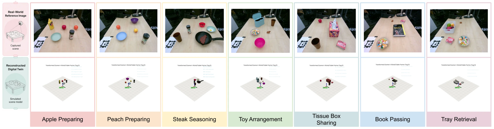
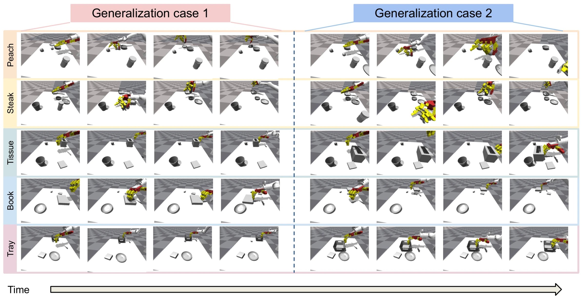

Abstract. Human manipulation videos are a convenient and intuitive source for robot learning. However, directly transferring human dexterity to robots remains challenging due to perception errors and embodiment gap. To address this, we introduce Video2Sim2Real, a full-stack framework for autonomous skill acquisition from a single human manipulation video. Our framework first uses off-the-shelf foundation models to reconstruct a simulator-ready digital twin and extract robot and object motion priors. Rather than treating the extracted robot motion as a reliable reference throughout execution, our key idea is to recover and leverage the most fundamental sources of supervision from the demonstrated skill: we identify object-centric keyframes to optimize the corresponding robot configurations using object information from the simulator, and use these configurations as anchors that refine the robot motion such that it ultimately has the desired impact on the environment. To bridge the remaining sim-to-real gap, we introduce a sim-to-real strategy that decouples robustness to noisy and incomplete perception from variations in hand-object interaction dynamics. Specifically, we learn to recalibrate robot configurations from noisy real-world point clouds via IL, and leverage residual RL to perform local finger-level adaptations to ensure for robust and effective interactions. Finally, a collision-aware motion planning module enables spatial generalization to novel object configurations. Across several everyday manipulation tasks, Video2Sim2Real improves simulated task success, safety, and trajectory coherence over numerous baselines, and achieves better sim-to-real transfer than existing techniques. These results demonstrate a promising path toward autonomous dexterous skill acquisition from human videos.
Autonomous
Acquire dexterous skills from a single human manipulation video — without robot demonstrations or expert intervention.
Teaser — from one human video to an autonomous robot skill.
Method
We develop a full-stack framework, Video2Sim2Real, for autonomous skill acquisition from the human manipulation videos. The framework consists of four main modules. First, an off-the-shelf perception module leverages foundation models to automatically reconstruct a digital-twin simulator as the refinement playground and extract robot and object motions. Second, a refinement module uses the simulator, key manipulation frames identified from object motions, and corresponding object information to optimize robot configurations for trajectory interpolation. Third, a sim-to-real transfer module learns both IL and RL policies to enable reliable real-world execution. Finally, an optional spatial generalization module uses the collision-aware motion planner CuRobo to generate robot trajectories for novel object configurations.

Robustness
One-shot videos
From a single demonstration, the learned skill is robust to local object-pose variations.
BibTeX
@article{video2sim2real,
title = {Video2Sim2Real: Full-Stack Self-Sufficient Dexterous Skill Acquisition from a Single Human Video},
author = {Anonymous Author(s)},
journal = {Under review},
year = {2026}
}Appendix
Implementation details of every module, the baselines and evaluation metrics, and the complete per-task results that supplement the paper.
- A Module Details
- B Geometry Gap & Physics Gap
- C Refinement Baseline Details
- D Refinement Experiment Details
- E Sim-to-Real Experiment Details
- F Time-Cost Breakdown
- G Spatial Generalization Results
- — References
Figure, table, and equation numbers continue from the main paper (Figs. 1–4 and Tables I–II appear there).
Appendix A Module Details
In this section, we provide the implementation details of each module.
A.1 Off-the-shelf Estimation Modules
The off-the-shelf estimation modules are primarily used to construct the digital twin simulator and extract motion priors for both the robot and the object.
A.1.1 Digital-Twin Reconstruction
We reconstruct an object-level, simulator-ready digital twin from RGB-D human manipulation observations.
Inputs. We use three key RGB frames from the manipulation video, \(\mathcal{I}_k=\{I_1,I_{\lfloor T/2 \rfloor},I_T\}\), together with the reference scene image \(I_s\) for semantic parsing. The key frames provide temporal evidence for identifying the manipulated object and the task evolution, while the reference image provides a less-occluded view for recognizing all tabletop objects. For geometric reconstruction of the scene, we use the reference RGB-D observation \((I_s,D_s)\) and camera intrinsics, and extrinsics \(\mathbf{T}_{c \rightarrow t}\).
Procedures. The pipeline consists of four stages: i) semantic scene parsing, ii) open-vocabulary object segmentation, iii) object-level 3D reconstruction, and iv) simulator asset export.
Stage 1: Semantic scene parsing with Gemini. We first query Gemini [1], using \(\mathcal{I}_k\) and \(I_s\) to infer a semantic scene description \(\mathcal{S}_{sem}=(\mathcal{O},i_{\mathrm{manip}},i_{\mathrm{target}},\tau)\), where \(\mathcal{O}=\{o_i\}_{i=1}^{N}\) is the set of detected tabletop objects. Each object is represented as \(o_i=(q_i,m_i)\), where \(q_i\) is a short text description for segmentation and \(m_i\) is a material category selected from a fixed vocabulary. The model is instructed to identify all distinct objects, determine which object is physically manipulated between the middle and final frames (denoted as \(i_{\mathrm{manip}}\)), classify the task type \(\tau\) (e.g., interactive manipulation or pushing), and identify the target object (\(i_{\mathrm{target}}\)) for interactive manipulation tasks. We enforce a structured JSON output so that the manipulated and target objects must correspond to entries in \(\mathcal{O}\).
To achieve this, the input prompt is explicitly designed to force Gemini to return a structured scene description rather than free-form text. The prompt instructs Gemini that all objects lie on a tabletop surface and asks it to perform five tasks:
- list all distinct objects in the scene as concise segmentation-oriented prompts;
- infer a coarse material type for each object from a fixed vocabulary {wood, plastic, metal, glass, rubber, ceramic, cardboard, foam, fabric, other};
- identify which single object is physically manipulated between the middle and last frames;
- classify the task type as either interactive manipulation or pushing;
- if the task is interactive manipulation, identify the target object.
The prompt further imposes two critical consistency constraints: the manipulated object prompt must exactly match one entry in the object list, and the target object prompt must also exactly match one entry in the object list and be different from the manipulated object. To make the prompts more segmentation-friendly, the model is asked to keep them short and spatially specific, e.g., “blue cube on left” or “yellow bottle on right”, and to disambiguate duplicated instances using location descriptors such as “near left edge” or “near center”. The required JSON schema is:
{
"scene": {
"objects": [
{
"prompt": "...",
"material_type": "wood|plastic|metal|glass|rubber|ceramic|cardboard|foam|fabric|other"
}
],
"manipulated_object": {
"prompt": "..."
},
"task_type": "put_object_to_object|manipulate_object",
"target_object": {
"prompt": "..." or null
}
}
}This schema is injected directly into the Gemini request as a schema hint and Gemini is required to return only valid JSON.
Stage 2: Open-vocabulary segmentation with SAM3. Given \(\mathcal{S}_{sem}\), we use each object description \(q_i\) as a text query for SAM3 on the reference image \(I_s\). This produces an object-level binary mask \(M_i\) for each object \(o_i\). The output of this stage is the mask set \(\mathcal{M}=\{M_i\}_{i=1}^{N}\).
Stage 3: Object-level 3D reconstruction with SAM 3D Objects. We reconstruct each segmented object from the reference RGB-D observation \((I_s,D_s)\), camera intrinsics \(\mathbf{K}\), and mask \(M_i\). The depth map is first unprojected into a metric point map using \(\mathbf{K}\). We then apply SAM 3D Objects to each masked object region, obtaining a raw mesh \(\hat{\mathcal{G}}_i\), and an initial camera-frame pose \(\mathbf{T}_c^i\). The output of this stage is the set of raw object reconstructions \(\hat{\mathcal{R}}=\{(\hat{\mathcal{G}}_i,\mathbf{T}_c^i)\}_{i=1}^{N}\).
Stage 4: Simulator asset export. The raw reconstructions are converted into simulator-ready assets through geometry canonicalization, coordinate-frame transformation, and physical-property estimation. First, each mesh \(\hat{\mathcal{G}}_i\) is locally canonicalized by applying a fixed orientation correction and shifting the mesh so that its lowest point lies on the support plane, yielding \(\mathcal{G}_i\). Second, using \(\mathbf{T}_{c\rightarrow t}\), we transform each camera-frame pose \(\mathbf{T}_c^i\) into the table-frame pose \(\mathbf{T}_t^i\). Third, we export each object as a URDF asset \(U_i\). The mass and inertial parameters are estimated from the reconstructed mesh volume and material label \(m_i\), and the contact parameters such as friction and restitution are assigned from a material-property table.
Outputs. The final output is a digital-twin scene used in subsequent modules
where \(q_i\) is the semantic object description, \(M_i\) is the 2D object mask, \(\mathcal{G}_i\) is the canonicalized object mesh, \(\mathbf{T}_t^i \in SE(3)\) is the 6-DoF object pose in the table frame, and \(U_i\) is the simulator-ready URDF asset. The module also returns the index of manipulated object \(i_{\mathrm{manip}}\), the target object \(i_{\mathrm{target}}\) when applicable, and the task type \(\tau\).
A.1.2 Motion Estimation
We extract both robot hand and object trajectories from the RGB-D human manipulation video \(\mathcal{V}\), providing informative motion priors for the demonstrated manipulation task.
Robot Trajectory. We first use HaMeR [2] for human hand estimation. Specifically, given \(\mathcal{V}\), we extract a human hand trajectory \(\{\mathbf{p}_c^t\}_{t=1}^T\), where \(\mathbf{p}_c^t \in \mathbb{R}^{21 \times 3}\) denotes the 3D positions of 21 hand keypoints at time step \(t\) in the camera frame. We then transform them to robot base frame \(\{\mathbf{p}_r^t\}_{t=1}^T\).
We further retarget the human hand trajectories \(\{\mathbf{p}_r^t\}_{t=1}^T\) to the robot configuration (i.e., arm and finger joints). With MINK [3], a differentiable IK solver, at time \(t\), the human video provides fingertip positions \(\{\mathbf{p}_{\mathrm{tip},k}^t\}_{k=1}^4\) as well as the wrist pose \((\mathbf{p}_{\mathrm{wrist}}^t,\mathbf{R}_{\mathrm{wrist}}^t)\). Here, each fingertip position \(\mathbf{p}_{\mathrm{tip},k}^t\) is taken directly as the corresponding MANO fingertip keypoint of finger \(k\in\{\text{thumb},\text{index},\text{middle},\text{ring}\}\), and the wrist pose is constructed from the wrist and metacarpophalangeal keypoints: the position \(\mathbf{p}_{\mathrm{wrist}}^t\) is the wrist keypoint (offset by a fixed amount to the robot's wrist link), and the orientation \(\mathbf{R}_{\mathrm{wrist}}^t\) is the frame spanned by the wrist-to-middle-knuckle axis and the palm-plane normal. We solve the following inverse kinematics optimization:
where \(\mathbf{q} \in \mathbb{R}^{n}\) denotes the robot joint angles, \(f_k^{\mathrm{pos}}(\mathbf{q})\) is the forward kinematics of the \(k\)-th robot fingertip, \(f_{\mathrm{wrist}}^{\mathrm{pos}}(\mathbf{q})\) and \(f_{\mathrm{wrist}}^{\mathrm{rot}}(\mathbf{q})\) are the wrist position and orientation under forward kinematics, and \(d_R(\cdot,\cdot)\) is the geodesic distance on \(\mathrm{SO}(3)\). Joint limits and collision constraints are enforced during optimization. Finally, we apply a Gaussian smoothing filter and obtain the retargeted trajectories \(\{\mathbf{q}^t\}_{t=1}^T\).
Object Trajectory. We use CoTracker [4] to track flow points on the manipulated object initialized from \(M_{i_{\mathrm{manip}}}\). For interactive tasks involving object–object interactions, we also track the target object using \(M_{i_{\mathrm{target}}}\). Let \(\{\mathbf{u}_{\mathrm{manip}}^t\}_{t=1}^{T}\) and \(\{\mathbf{u}_{\mathrm{target}}^t\}_{t=1}^{T}\) denote the tracked 2D flow points of the manipulated and target objects, with \(\mathbf{u}_{\cdot}^t\in\mathbb{R}^{K\times 2}\). These points are lifted to 3D using depth values and transformed into the table frame, yielding \(\{\mathbf{x}_{\mathrm{manip}}^t\}_{t=1}^{T}\) and \(\{\mathbf{x}_{\mathrm{target}}^t\}_{t=1}^{T}\), where \(\mathbf{x}_{\cdot}^t\in\mathbb{R}^{K\times 3}\).
A.2 Refinement Modules
A.2.1 Keyframe Identification
We use generalized heuristics to detect three key manipulation frames: the contact, interaction, and detachment frames, denoted by \(T_c\), \(T_i\), and \(T_d\), respectively.
Contact frame. Given the manipulated-object 2D flow points \(\{\mathbf{u}_{\mathrm{manip}}^t\}_{t=1}^{T}\), we compute their centroid as \(\mathbf{c}_{\mathrm{manip}}^t=\frac{1}{K}\sum_{k=1}^{K}\mathbf{u}_{\mathrm{manip},k}^t\). We then measure the displacement from the initial frame, \(d^t=\|\mathbf{c}_{\mathrm{manip}}^t-\mathbf{c}_{\mathrm{manip}}^1\|_2\), and define the motion indicator \(m^t=\mathbb{I}(d^t>\delta_c)\). The contact frame is detected as the earliest frame with a consecutive motion streak, i.e., \(T_c=\min\{t \mid \sum_{j=t}^{t+L_c-1}m^j=L_c\}\), where \(\delta_c=4\) and \(L_c=50\) are fixed across tasks.
Interaction frame. For interactive tasks indicated by task type \(\tau\), we also track target-object flow points \(\{\mathbf{u}_{\mathrm{target}}^t\}_{t=1}^{T}\). Let \(\mathbf{c}_{\mathrm{target}}^t\) be their centroid and define the relative centroid offset as \(\mathbf{r}^t=\mathbf{c}_{\mathrm{manip}}^t-\mathbf{c}_{\mathrm{target}}^t\). We compute the relative motion \(s^t=\|\mathbf{r}^t-\mathbf{r}^{t-1}\|_2\), smooth it with a window size of 3, and denote the result by \(\bar{s}^t\). The interaction frame is detected as \(T_i=\min\{t\geq T_c \mid \sum_{j=t}^{t+L_i-1}\mathbb{I}(\bar{s}^j<\delta_i)=L_i\}\), where \(\delta_i=1.0\) and \(L_i=3\) are fixed across tasks.
Detachment frame. The drop-off frame \(T_d\) is detected as the first frame after \(T_c\) where the manipulated object's height falls below 3 cm above the table.
A.2.2 Keyframe Refinement
Given the robot joint trajectory \(\{\mathbf{q}^t\}_{t=1}^T\), we adjust the robot hand poses at the contact frame (\(\mathbf{T}_{h}^c\)) and the interaction frame (\(\mathbf{T}_{h}^i\)). At the contact frame, we replay the retargeted trajectory in simulation to recover the raw hand–manipulated-object relative transform \(\mathbf{T}_{h\rightarrow m}^{c}\), then correct it differently for grasping and pushing/pulling. The corrected transform \(\hat{\mathbf{T}}_{h\rightarrow m}^{c}\), together with the manipulated-object pose in the table frame, yields the corrected hand pose \(\hat{\mathbf{T}}_{h}^{c}\). All quantities below are expressed in the manipulated-object frame unless otherwise noted.
Contact-Frame Refinement for Grasping. We obtain a coarse hand–object relative pose at the contact frame by replaying the retargeted trajectory. Because this pose carries perception, reconstruction, and retargeting error, we (i) apply a geometry-based correction that depends on the grasp type and (ii) seed a local grasp search from the corrected pose. The correction adjusts only the hand position; the demonstrated orientation is preserved.
Coarse relative-pose correction. Let \(\mathbf{a}_{m}\) be the hand approach axis in the object frame (whose \(z\)-axis points up, away from the table) and \(\mathbf{z}_{m}^{-}=[0,0,-1]^\top\) the downward axis. The grasp is a top grasp if the alignment \(s=\mathbf{a}_{m}^\top\mathbf{z}_{m}^{-}\) exceeds \(\tau_{\mathrm{top}}\), and a side grasp otherwise.
Top grasps. Let \(\mathbf{p}_{\mathrm{palm}}\) be the palm-center position in the object frame and \(d_{xy}\) its horizontal distance to the object's vertical axis. With object height \(h_{\mathrm{obj}}\) and top \(z_{\max}\), we set an adaptive clearance \(d_{\mathrm{top}}=\mathrm{clip}(\rho_{\mathrm{top}}\,h_{\mathrm{obj}},d_{\min},d_{\max})\) and move the palm to
If the palm already lies nearly above the object we fix only its height; otherwise we recenter it over the object.
Side grasps. We maintain a fixed standoff \(d_{\mathrm{side}}=\mathrm{clip}(d_{\mathrm{side}}^{0},d_{\min},d_{\max})\) from the object. We first lift the hand to a minimum height \(\rho_{\mathrm{side}}\,h_{\mathrm{obj}}\) if it sits lower, then translate it toward the nearest of \(N_{s}\) sampled surface points until the hand–surface distance equals \(d_{\mathrm{side}}\), capping the total translation at \(\Delta_{\max}\).
Grasp optimization. We generate grasps with Lightning Grasp [5], which returns candidate hand–object transforms with finger configurations while optimizing contact locations, solving contact inverse kinematics (IK), and rejecting self- and hand–object collisions. We center its object-pose sampling on the corrected relative pose, keeping the result consistent with the demonstrated interaction. We then clean the candidate contact points sampled on the object surface: a continuity filter drops isolated points (fewer than \(\kappa\) neighbors within radius \(r\)), which removes interior artifacts of imperfect meshes where the hand could penetrate the object; and we discard points low on the object (the band above its lowest point) so the grasp does not place the hand low, near the table. As a final safeguard we reject any grasp whose hand links fall below the table.
Multi-attempt local sampling. Each attempt draws \(R\) batches of object poses around the corrected pose and keeps the best result (preferring more fingers in contact, then more valid grasps); it succeeds once at least \(N_{\min}\) valid grasps are found. On failure we widen the sampling range and retry, up to \(A\) attempts: at attempt \(n=0,1,\dots\) the per-axis translation range is \(\pm(\Delta_t^{(0)}+n\,\delta_t)\) and the rotation range about the hand's local \(y\)-axis is \(\pm(\Delta_r^{(0)}+n\,\delta_r)\). The module returns
i.e. hand-object relative transforms, grasp configurations, and pre-grasp configurations.
Pre-grasp construction. For each grasp we back the contact targets off the surface along their outward normals, \(\mathbf{p}_{j}^{\mathrm{pre}}=\mathbf{p}_{j}^{c}+\delta_{\mathrm{pre}}\, \mathbf{n}_{j}^{c}\), and re-solve contact IK for the contacting fingers only (free fingers keep their grasp values), yielding a configuration in which the fingers hover just outside the object before closing.
Selection by a stability test. We validate the candidates in \(\mathcal{G}\) in simulation: each grasp is replayed as the hand approaches, adopts its pre-grasp, closes, lifts the object, and is then shaken along the three Cartesian axes and in wrist rotation. A grasp is accepted if the object stays lifted by more than \(\tau_{\mathrm{lift}}=6\,\mathrm{cm}\) throughout, with no hand–table contact; we regenerate grasps until one is accepted, which defines the final \(\hat{\mathbf{T}}_{h\rightarrow m}^{c}\) used in the contact-frame refinement.
Contact-frame Refinement for Pushing/Pulling. At the contact frame \(t_c\), we refine the hand–object relative pose so the selected fingertip contacts the correct side of the object and aligns with its motion, using the reconstructed object mesh, the object flow, and the fingertip geometry from forward kinematics.
Object motion direction. From the 3D flow points at \(t_c\) and a short look-ahead frame \(t_+=\min(t_c+\Delta t,\,T-1)\), we compute table-frame centroids \(\mathbf{c}_{t_c}^{w}\) and \(\mathbf{c}_{t_+}^{w}\) (averaging only ID-matched points when track IDs exist, otherwise all points). The motion direction in the world and object frames is
where \({}^{w}\mathbf{R}_{m}\) is the reconstructed object orientation.
Fingertip geometry. The relative-pose file stores the palm pose in the object frame, while forward kinematics uses the hand/base frame. We map the initial palm pose to the base pose via the fixed URDF transform \({}^{h}\mathbf{T}_{p}\), \({}^{m}\mathbf{T}_{h}^{0}={}^{m}\mathbf{T}_{p}^{0}\,({}^{h}\mathbf{T}_{p})^{-1}\), and evaluate forward kinematics at the retargeted configuration to obtain the contact-link origin \(\mathbf{p}_{\ell}^{h}\) and normal \(\mathbf{n}_{\ell}^{h}\) in the hand/base frame (by default the middle fingertip head, local normal \([-1,0,0]^\top\)).
Selecting the active fingertip side. We project the motion direction onto the table plane, express it in the hand frame, and score its consistency with the fingertip normal:
with \(\Pi_{xy}([x,y,z]^\top)=[x,y,0]^\top\). If \(s_{\mathrm{pp}}\le\tau_{\mathrm{pp}}\) the normal faces the wrong way, so we flip it, \(\mathbf{n}_{\ell}^{h}\leftarrow-\mathbf{n}_{\ell}^{h}\); otherwise it is kept. This distinguishes the pushing and pulling contact configurations.
Choosing the contact point. We sample surface points from the object mesh and select a contact point on the approach side. With the motion direction projected onto the object \(x\)-\(y\) plane as \(\hat{\mathbf{d}}_{m}^{xy}\), the search direction follows the scene flag \(b_{\mathrm{along}}\) (whether the hand moves along the object motion): \(\hat{\mathbf{d}}_{\mathrm{search}}^{xy}=\hat{\mathbf{d}}_{m}^{xy}\) if \(b_{\mathrm{along}}\) is true, and \(-\hat{\mathbf{d}}_{m}^{xy}\) otherwise. Discarding points near the object's local \(z\)-axis, we keep points whose radial direction aligns with \(\hat{\mathbf{d}}_{\mathrm{search}}^{xy}\), then keep the farthest ones (above a percentile threshold) so candidates lie on the outer surface. We take their mean, set its height to a normalized target \((1-\alpha)\,h_{\mathrm{obj}}\), and pick the nearest sampled point as the contact point \(\mathbf{p}_{\mathrm{contact}}\).
Pose correction. With the contact-link normal in the object frame \(\mathbf{n}_{\ell}^{m,0}={}^{m}\mathbf{R}_{h}^{0}\mathbf{n}_{\ell}^{h}\), we compute a correction rotation that aligns it horizontally with the motion direction, \(\mathbf{R}_{\mathrm{corr}}\,\mathbf{n}_{\ell}^{m,0}=\hat{\mathbf{d}}_{m}^{xy}\), and translate the rotated fingertip origin to a target standing off from the contact point, \(\mathbf{p}_{\mathrm{target}}=\mathbf{p}_{\mathrm{contact}} -\delta\,\hat{\mathbf{d}}_{m}^{xy}\), where \(\delta\) is a small stand-off distance. Together these give the corrected base pose \({}^{m}\hat{\mathbf{T}}_{h}^{c}\).
Interaction-frame Refinement. We estimate the desired pose of the manipulated object at the interaction frame, \(\hat{\mathbf{T}}_{m}^{i}\), using tracked 3D flow points in the human demonstration. Combining \(\hat{\mathbf{T}}_{m}^{i}\) with the corrected contact-frame relative transform \(\hat{\mathbf{T}}_{h\rightarrow m}^{c}\) yields the desired interaction-frame end-effector pose \(\hat{\mathbf{T}}_{ee}^{i}\), together with the corresponding hand–target-object relative pose \(\hat{\mathbf{T}}_{h\rightarrow g}^{i}\). Both are passed to the motion planning module.
Object pose estimation. We estimate the manipulated-object pose at any target frame \(t\), denoted \(\hat{\mathbf{T}}_{m}^{t}\), from tracked 3D flow points via closed-form rigid alignment. Given the known initial pose \(\mathbf{T}_{m}^{0}\) from scene reconstruction and 3D flow points with persistent IDs across frames, we intersect the ID sets between a source frame \(s\) and the target frame \(t\) to obtain \(N\) paired world-frame points \(\{(\mathbf{p}_i^{s}, \mathbf{p}_i^{t})\}_{i=1}^{N}\). We express the source-frame points in the object frame using the known source pose, \(\mathbf{p}_i^{o} = (\mathbf{T}_{m}^{s})^{-1} \mathbf{p}_i^{s}\), and solve
in closed form via the Kabsch (SVD) algorithm. Fitting the target pose directly from object-frame to target-world points avoids the convention errors that arise when first estimating a world-space motion and then composing it with \(\mathbf{T}_{m}^{s}\). To handle tracking outliers, we wrap the fit in RANSAC: at each iteration we sample three correspondences, fit a candidate transform, and count points with residual below an inlier threshold \(\tau_r\) as inliers; the largest inlier set is then used for a final refit.
Trajectory Interpolation. With the refined keyframe hand poses and the retargeted trajectory, we segment each trajectory into task-specific phases and apply DLS-based task-space correction. Two operators recur throughout. All blends use the quintic smoothstep
which has zero velocity at both ends (\(\alpha'(0)=\alpha'(1)=0\)), so motion starts and stops without jumps. When the arm tracks the retargeted motion while holding the palm at a target pose, we correct the seven arm joints with a damped least-squares (DLS) step on the \(6\)-D palm pose error—the position error together with the axis–angle of \(R^{*}R^{\top}\). At key frames we instead solve exact inverse kinematics so the palm lands precisely on its target pose; these anchor frames are pinned and preserved by a final smoothing pass that removes residual jitter from the arm joints.
Grasping. Four phases. Hand-pose: the arm moves to the grasp pose (reached by a smoothstep-ramped DLS correction) while the fingers stay open. Pre-grasp: the arm is fixed and the fingers blend to a pre-grasp shape. Grasping: the arm is fixed and the fingers close to the target grasp, completing contact. Post-grasp tracking: the arm follows the retargeted motion under DLS correction. The fingers stay closed and open only when a release frame is detected from the object's lifting height (e.g., for placing); tasks that keep holding the object, such as pouring, have no release frame, so the fingers remain closed throughout.
Pushing/pulling. Three phases. The pre-push pose sits a short distance behind the push pose along the push direction and shares its orientation, so the approach is a pure translation. Pre-contact: the arm moves to the pre-push pose. Contact: the palm is interpolated in \(SE(3)\) from the pre-push to the push pose with IK at each step. Post-contact tracking: the arm tracks the retargeted motion under DLS correction, with the palm height pinned at the contact height to avoid robot-table collision. The fingers follow the retargeted motion throughout.
A.3 Sim-to-Real Module
A.3.1 Details of Distillation Learning
Tasks and Models. We distill two task families. Pushing/pulling uses one object and one keyframe, the contact pose. Grasping uses two objects and two keyframes: a contact pose in the manipulated-object frame (where the hand grasps) and an interaction pose in the target-object frame (where the grasped object is brought). For grasping we train two models with identical architecture and objective—a contact model from the manipulated-object cloud to the contact pose, and an interaction model from the target-object cloud to the interaction pose; pushing/pulling uses only the contact model. All clouds and poses are in the table frame, and the simulated clouds contain only object surfaces (no robot points), matching deployment, where the policy is queried once before the arm enters the workspace.
Training Data Generation. Each task is seeded by one human-video demonstration that gives the palm pose at every keyframe in the relevant object's frame. We synthesize 2k–4k labeled samples by randomizing the scene and re-deriving the labels analytically.
Randomization. Per sample we draw an object placement (in-plane translation ±5 cm per axis, yaw ±10°; height fixed on the table; objects perturbed independently).
Visible cloud. We pre-sample \(K{=}100\) canonical unit-scale clouds by farthest-point sampling and reuse one per sample (round-robin). Each cloud is scaled, transformed to the table frame by the sampled object pose, voxel down-sampled (voxel size 1.0–1.7 cm, one point per occupied voxel, for size-invariant density), and reduced to the points visible from the sampled camera by hidden-point removal. This yields a realistic single-view partial cloud of variable size—hence the mask-aware network.
Labels. The contact pose is mapped to the table frame through the sampled manipulated-object pose; for grasping, the interaction pose is likewise mapped through the sampled target-object pose, with its in-plane translation scaled by the target's size ratio (standoff height preserved). For symmetric objects we use the canonical orientation so the label does not chase an unobservable yaw.
Network Architecture. We use a mask-aware PointNet-style residual network. Given a cloud of \(N\) points with centroid \(\mathbf{c}\) (over observed points), we center by \(\mathbf{c}\), encode each point with a shared MLP (\(3 \!\to\! 64 \!\to\! 128 \!\to\! 128\), ReLU), and aggregate with masked max- and mean-pooling (the mask removes batch padding). The two pooled vectors and \(\mathbf{c}\) are fused to 128-d and refined by two residual blocks; two heads output the translation residual \(\Delta \hat{\mathbf{p}} \in \mathbb{R}^3\) and the 6D rotation \(\hat{\mathbf{r}}_{6D} \in \mathbb{R}^6\), from which \(R(\hat{\mathbf{r}}_{6D})\) is recovered by Gram–Schmidt and \(\hat{\mathbf{p}} = \Delta \hat{\mathbf{p}} + \mathbf{c}\). The network is lightweight (\(\sim\!10^5\) parameters).
Training. We use the residual pose loss from the main paper (\(\lambda_{\mathrm{pos}} = \lambda_{\mathrm{rot}} = 1\)). Inputs and the target \((\Delta \mathbf{p}, \mathbf{r}_{6D})\) are standardized by per-channel statistics from the training split; the position term is computed in this normalized space, while the rotation term stays in physical matrix space (Gram–Schmidt needs the raw 6D values). During training we apply label-preserving cloud augmentations—Gaussian jitter (≈1 mm, clipped at 4 mm), point dropout (up to 20%, then resampled), and shuffle—and recompute \(\mathbf{c}\) afterward. We optimize with AdamW and a cosine-annealed learning rate, clip the gradient norm at 1.0, and early-stop on validation position error. The train/validation split is by canonical point-cloud group, so no base geometry appears in both splits, preventing leakage. Table III lists the main settings.
| Setting | Value |
|---|---|
| Optimizer | AdamW |
| Learning rate (cosine to \(10^{-6}\)) | \(10^{-3}\) |
| Weight decay | \(10^{-6}\) |
| Batch size | 256 |
| Max epochs / patience | 1600 / 300 |
| Dropout | 0.2 |
| Gradient-norm clip | 1.0 |
| Loss weights \((\lambda_{\mathrm{pos}}, \lambda_{\mathrm{rot}})\) | (1, 1) |
| Max input points | 500 |
| Validation ratio | 0.15 |
| Point-cloud bank size \(K\) | 100 |
| Voxel size \(v\) | 1.0–1.7 cm |
| Jitter std / clip | 1 mm / 4 mm |
| Point dropout | up to 20% |
| Object \(xy\) range / yaw range | ±5 cm / ±10° |
| Mesh-scale range | [0.8, 1.2] |
A.3.2 Details of Residual RL Learning
For each video demonstration, we train a residual policy on top of the optimized retargeted robot trajectory. Specifically, the policy predicts bounded joint-space corrections (clipped to a maximum magnitude of 0.06) that are applied only to the hand joints, while the arm follows the optimized reference. The policy is trained with PPO using 8,192 parallel simulated rollouts. Each PPO update collects 16 policy steps per rollout, giving 131,072 transitions per update, and optimization uses minibatches of 32,768 samples for 4 epochs. We use a discount factor of 0.99, generalized advantage estimation with parameter 0.95, PPO clipping threshold 0.1, adaptive learning rate initialized at \(10^{-4}\), and a KL target of 0.016. The actor and critic share a multilayer perceptron with hidden sizes 128, 256, 256 and ELU activations, with normalized observations, normalized value targets, normalized advantages, and mixed-precision training. The simulation runs at 60 Hz, while each policy command is held for 5 simulation steps. Rollouts terminate at the demonstration horizon or early after contact if the hand is no longer sufficiently close to the manipulated object. During training, observation, action, control gains, object scale, mass, and friction are randomized to improve robustness. A separate policy is trained for each demonstration, and the selected final checkpoints are the best runs from this sweep.
A.4 Spatial Generalization Module
Our motion planning pipeline consists of two stages: 1) collision-aware trajectory planning via Curobo [6], and 2) trajectory filtering. Given the reconstructed scene and the new task configuration, this pipeline either generates a collision-aware trajectory or determines that no collision-free path exists.
Collision-aware Trajectory Planning. First, we randomize the position of the manipulated object, and use the relative pose at the contact step (\(\hat{\mathbf{T}}_{h\rightarrow m}^{c}\)) to generate the corresponding robot pose \(\bar{\mathbf{T}}_{h}^{c}\). Then, given the randomized pose of the interactive object, we compute the robot pose at the interaction step \(\bar{\mathbf{T}}_{h}^{i}\), via \(\hat{\mathbf{T}}_{h\rightarrow g}^{i}\). To encourage lifting after grasping, we introduce an intermediate waypoint, which is the midpoint between \(\bar{\mathbf{T}}_{h}^{c}\) and \(\bar{\mathbf{T}}_{h}^{i}\). Without this, we empirically observe that the planner may generate trajectories that slide along the table.
We then generate collision-free trajectories with cuRobo with the reconstructed scene in a staged manner. For grasp and place tasks, it first plans an approaching trajectory that brings the hand to pose \(\bar{\mathbf{T}}_{h}^{c}\) near the object. It then plans a transporting trajectory in two consecutive parts: the first part lifts the object and moves it toward the intermediate waypoint, and the second part moves from that waypoint to the pose \(\bar{\mathbf{T}}_{h}^{i}\).
However, in this procedure, the planned finger trajectories are not directly useful, as they primarily ensure collision avoidance and do not capture task-relevant finger behavior, since finger-level objectives are not supported in the planning.
For push and pull tasks, we use a simplified motion generation strategy. Only the approaching phase is planned with Curobo to bring the hand near the object. Unlike grasp-and-place tasks, no elevated waypoint or transporting trajectory is introduced. Instead, the end-effector follows a straight-line Cartesian motion at an approximately constant height above the tabletop. We empirically observe that turning motions often cause unstable push/pull behaviors and loss of contact. Therefore, rather than performing full motion planning, we directly interpolate a linear trajectory between the start and target poses and solve continuous inverse kinematics to realize the corresponding motion. For push tasks, no interactive object is involved, and the target is specified as a spatial coordinate on the tabletop.
Trajectory Filtering. We first generate finger trajectories from the optimized reference via phase interpolation over three key phases—contact, interaction, and detachment (if present)—and subsequently verify finger-level collisions.
In practice, the planned end-effector pose may still deviate slightly from the desired contact pose (typically around 1 cm) due to planning error, which can lead to interaction failures. After reaching the planned contact pose, we further perform a short-horizon IK refinement stage. Using the current manipulated object pose together with the recorded relative contact transform \(\hat{\mathbf{T}}_{h\rightarrow m}^{c}\), we solve a short-horizon IK adjustment to align the end-effector with the desired contact pose.
We then overwrite the states (i.e., robot joints and object poses) from the planned trajectory, applying the following filtering criteria: i) environment collisions caused by fingers and ii) implausible arm spinning behaviors (occasionally produced by Curobo).
Final Output: Given the new task configuration, this module outputs the valid collision-free robot trajectory, if it exists, along with the associated object trajectory.
Appendix B Geometry Gap & Physics Gap
In this section, we characterize the geometry and physics gaps that must be addressed to enable reliable sim-to-real transfer of policies learned in a digital twin simulator. Note that both geometry randomization and physics randomization fall under the broader framework of domain randomization [7]. In this work, we explicitly separate them to highlight their distinct objectives and the different challenges they are designed to address.
B.1 Geometry Gap
Let \(g\) denote the geometry parameters, including the estimated object poses in the scene, and the reconstructed object meshes. Let \(o\) denote the state observations, which may be parameterized by 6D object poses, 3D flow points, or 2D flow points. Finally, let \(a\) denote the output trajectories.
Optimization Modules in Simulation (denoted as \(\psi\)). Let \(\hat{g}\) denote the true scene geometry and \(\bar{g}\) the geometry estimated from perception module. The keyframe optimization and motion planning modules generate actions according to
which depends solely on the estimated geometry rather than the true geometry. Since \(\bar{g}\) may differ from \(\hat{g}\), the resulting trajectory may not be optimal when executed in the real world. This discrepancy between the estimated and true geometry constitutes the geometry gap.
Policy Learning. Let \(\phi\) denote a policy learned by distilling trajectories generated by the contact optimization and motion planning modules. From a probabilistic perspective, the policy models a conditional distribution over actions given observations,
where \(o\) denotes the observation. Note that because the training dataset is generated under a fixed geometry estimate \(\bar{g}\), the learned policy also implicitly conditions on this estimate.
However, due to the mismatch (\(\bar{g} \neq \hat{g}\)), we aim to obtain a policy that is robust to geometry estimation errors, we instead seek a geometry-agnostic policy that depends only on the observation:
From a probabilistic perspective, this corresponds to marginalizing out the geometry variable:
Therefore, learning the policy \(\phi(o)\) corresponds to learning an observation-conditioned policy that marginalizes over uncertainty in the underlying geometry parameters.
Geometry Randomization: In practice, we can approximate this marginalization using geometry randomization during data generation before policy distillation.
Data generation process. We sample geometry parameters \(g_i \sim p(g)\) and generate trajectories using the contact optimization and motion planning modules. Given the geometry parameters, observations are generated according to \(o \sim p(o \mid g)\). Finally, actions are produced by the planner \(\psi\). As a result, the collected dataset follows the joint distribution
Policy learning. The policy is trained using observation–action pairs \((o,a)\) sampled from this dataset, and therefore aims to approximate the conditional distribution \(p(a \mid o)\).
Using the definition of conditional probability,
Substituting the joint distribution yields
Applying Bayes' rule,
we obtain
This shows that the policy trained on this generated dataset \(a = \phi(o)\) approximates the stochastic distribution \(p(a \mid o)\) (Eq. 3) that implicitly marginalizes over the geometry parameters.
Observation Space: Here, the observation model \(o \sim p(o \mid g)\) also plays a critical role in the final performance. Since the dataset is generated entirely in simulation while the learned policy is deployed in the real world, the observation distribution induced by \(p(o \mid g)\) in simulation should closely match that of the real environment. Otherwise, discrepancies in \(p(o \mid g)\) introduce an additional sim-to-real gap in the observation model, affecting the resulting observation–action joint distribution.
Below, we show that each observation modality may introduce its own source of discrepancy due to modeling or perception artifacts.
6D poses: The primary gap arises from pose estimation accuracy, as the raw camera observations must be processed by a separate perception network, e.g., FoundationPose [8]. The resulting errors are largely determined by the performance of that network and are difficult to control within the policy learning pipeline.
3D object points: The main discrepancy stems from occlusion modeling. In the real world, occluded flow points often lack reliable depth measurements, whereas in simulation all 3D points can be perfectly tracked, leading to a mismatch in the observable flow structure.
2D object points: The gap primarily originates from differences in the camera imaging model. Since 2D flow depends on the image projection, mismatches between the simulated camera model and the real camera can introduce additional errors.
In this work, we use 3D object points as policy observations. This is because for our decoupled sim-to-real approach, the distillation policy is queried before the robot hand enters the workspace, avoiding severe hand-object occlusions, which are the main source of sim-to-real discrepancy in point-cloud observations. In the case of the residual RL policy, we empirically found that the sim-to-real discrepancy does not impair real-world performance, likely because this policy primarily learns to execute local residual finger adjustments.
Summary: The intuition for addressing the geometry gap is that the more privileged information (e.g., object poses) used to build the simulator and generate data, the larger the resulting gap. Therefore, we should rely on less privileged information (i.e., object point clouds) during policy learning for robust transferring.
B.2 Physics Gap
We similarly follow the above formulation to randomize physics parameters (i.e., replace \(g\) with \(l\), which denotes the physical parameters), thereby accounting for variability in factors such as mass and friction coefficients that are subject to estimation errors.
Appendix C Refinement Baseline Details
In this section, we detail the baselines, including detailed description, the shared reward design, and the observation and action space of each baseline.
C.1 Baseline Descriptions
To evaluate refinement strategies, we compare our approach with five recent RL-based methods:
- Residual RL [9, 10]: This method learns a RL policy that outputs the residual terms upon the raw retargeted trajectory, which includes the finger and arm joints.
- Deep-mimic RL [11, 12, 13]: Instead of restricting the RL policy to output residual corrections on the raw retargeted trajectory, this approach uses the retargeted trajectory as a reward reference and the termination condition to limit large deviations, thereby enabling the RL policy to make larger, non-residual adjustments.
- Pre-Contact Init: Inspired by [14], this approach first initializes the robot at the pre-contact pose derived from the retargeted trajectory, and then trains an RL policy using only the object-tracking reward.
- Opt-Pre-Contact Init: Similar to Pre-Contact Init, this baseline initializes the robot at the optimized contact pose. However, instead of directly interpolating from the retargeted trajectory, it trains an RL policy to complete the remaining manipulation.
- Object-only: Inspired by [15], this approach disregards the retargeted human trajectory and trains an RL policy using only the object-tracking reward.
C.2 Baseline Design
Shared Reward Design: The basic reward design is the same as in our method, including the 3D flow tracking reward and the action penalties. The auxiliary rewards further include an approaching reward, a contact reward, and a lifting reward when the task involves grasping and lifting the object. Also, both the basic and auxiliary rewards incorporate object-collision and table-clearance penalties to encourage safe behavior. To facilitate baseline training, we also introduce an early termination criterion based on the average distance between the fingertips and the object pose exceeding a threshold, as commonly used in prior work.
We further detail the observation space, action space and training procedures for each baseline.
Residual RL: The observation space is the same as that used in our residual RL for sim-to-real transfer: \(\mathbf{o}_t = \left[ \bar{\mathbf{q}}^{\mathrm{cur}}_t,\; \bar{\mathbf{q}}_{t+1},\; \mathbf{c}_t,\; \Delta \mathbf{x}_t,\; \Delta \theta_t \right]\). The main differences lie in the action space and the base trajectory used during training: i) residuals are applied to the full action space, including the arm joints, as the policy must also adjust the robot pose, and ii) the base trajectory is the raw retargeted trajectory without optimization.
Deep-Mimic RL: As suggested in [11], the observation space includes only the current robot and object states, without next-step reference robot states. Accordingly, \(\mathbf{o}_t = \left[ \bar{\mathbf{q}}^{\mathrm{cur}}_t,\; \mathbf{c}_t,\; \Delta \mathbf{x}_t,\; \Delta \theta_t \right]\). The action space consists of joint-space residuals \(\delta \mathbf{q}_t\), where the control targets are computed by adding these residuals to the current joint states: \(\mathbf{q}^{\mathrm{target}}_t = \mathbf{q}^{\mathrm{cur}}_t + \delta \mathbf{q}_t,\) with \(\mathbf{q}^{\mathrm{cur}}_t\) denoting the current robot joint angles. During training, this baseline also introduces robot trajectory tracking rewards to encourage the policy to follow the retargeted trajectory. In addition to object–fingertip-based early termination, it further incorporates a trajectory-deviation criterion, whereby an episode is terminated if the robot joint states deviate excessively from the raw retargeted trajectory.
Pre-Contact Init: The observation and action spaces are identical to Deep-Mimic RL. During training, the robot states (both arm and fingers) are initialized at pre-contact states from the raw retargeted trajectory, computed as a fixed offset (i.e., \(-10\) timesteps) prior to object movement.
Opt-Pre-Contact Init: Similar to Pre-Contact Init, but initialized from the optimized contact poses.
Object-only: The observation and action spaces are identical to Deep-Mimic RL, with no additional initialization or early termination.
For each baseline and reward type, we use three random seeds and set the maximum training time to 10 hours, using 8192 parallel Isaac Gym environments on an A40 GPU.
Appendix D Refinement Experiment Details
In this section, we provide additional details and rollout results for the refinement experiments.
D.1 Keyframe Refinement
Here, we show the robot configurations at contact frame before and after refinement in Fig. 5, which clearly demonstrates deviations from the intended manipulation and hinders direct replay. This highlights errors arising from inaccurate hand estimation and the remaining embodiment gap.

We also present human hand annotation images with MANO skeletons obtained via HaMeR (see Fig. 6), illustrating instances of hand self-occlusion and hand–object occlusion for each task. These artifacts help explain why the retargeted trajectories deviate from the intended manipulation.

Additionally, for the Steak Seasoning task, the original retargeted trajectory is of relatively high quality, which explains why the residual RL baseline achieves the second-best performance on this task (shown in Table V).
D.2 Evaluation Metrics
Here, we provide detailed definitions of the task evaluation metrics.
We evaluate all methods under the same protocol. During each rollout, at every frame, we log the poses of the manipulated and target objects, the commanded joint positions \(q_t\), and the contact force on each robot link. We report four metrics: the task success rate (with a multi-stage breakdown), the safe rate, the trajectory jerk, and the finish frame.
D.2.1 Success Rate
Each trial is scored as a binary success, and the success rate is the fraction of successful trials. A trial succeeds when all of its task's conditions hold at the end of the rollout; the conditions are defined per task in Table IV. In brief, a grasp or pour must lift the object, bring it to the correct pose relative to the target, and end with the hand released (grasp) or still holding it (pour); a push must leave the object at the demonstrated target pose.
| Task | Success conditions (all must hold) |
|---|---|
| Grasp | object rises > 0.05 m above its start |
| final offset from target < 0.07 m | |
| final height above target < object height + 0.01 m | |
| hand released: contact force < 0.1 N | |
| Pour | object rises > 0.05 m above its start |
| final offset from demo position < 0.10 m | |
| final height above target > 0.10 m | |
| tilted > 90° from upright | |
| hand holding: contact force > 1.0 N | |
| Push | final position error vs. demo target < 0.10 m |
| final orientation error vs. demo target < 60° |
Multi-stage success rate. To show where a method fails, we further split grasping and pouring success into two stages:
Stage 1 asks whether the object is lifted off the table. Stage 2 asks whether it then reaches the correct final pose (the position, height, and tilt conditions in Table IV) and whether the hand condition holds. We report the success rate of each stage; a trial counts as a full success only when both stages pass. Pushing has no lift stage and is scored by its final pose alone.
D.2.2 Safe Rate
A trial is unsafe if the robot collides with the table. At each frame we take the largest contact-force magnitude over the arm links and over the hand links that lie below the table top; the height gate on the hand excludes the intended hand–object contact, which occurs above the table. If this force exceeds 20 N at any point during the rollout, the trial is flagged as a collision. The safe rate is the fraction of trials with no collision.
D.2.3 Trajectory Smoothness (Jerk)
We measure motion smoothness by the jerk (third time derivative) of the commanded joint trajectory, computed by a finite difference:
We report the root-mean-square of \(j_t\) over the rollout, computed separately for the arm and the hand (they move at different scales) and averaged over trials. Lower jerk means smoother motion.
D.2.4 Finish Frame
The finish frame is the settling time of the object: the first frame after which its position stays within \(\epsilon = 5\) mm of its final value,
where \(p_t\) is the object position at frame \(t\) and \(T\) is the last frame. A smaller \(F\) means faster completion. We report the mean over successful trials (failed trials have no meaningful finish time).
Note that the finish frame is counted only for the sim-to-real experiments.
D.3 Complete Per-task Evaluation Results
Here, we provide the complete per-task evaluation results in Tables V, VI, VII, and VIII. The potential reason our method does not achieve a 100% success rate in the Steak Seasoning task (shown in Table V) is the slight variation in contact dynamics within the Isaac Gym simulator. As a result, even when tracking the same trajectory, contact outcomes can vary across runs. In some cases, these discrepancies lead to task failure due to the high sensitivity required for precise dexterous grasping. Such failures could be further mitigated by incorporating the policy learning module to improve robustness.
| Method | Apple Prep. | Peach Prep. | Steak Season. | Toy Rearr. | Tissue Box | Book Pass. | Tray Retr. | Avg. | ||||||||
|---|---|---|---|---|---|---|---|---|---|---|---|---|---|---|---|---|
| Lift | Obj. | Succ. | Lift | Obj. | Succ. | Lift | Obj. | Succ. | Lift | Obj. | Succ. | Succ. | Succ. | Succ. | Succ. | |
| Residual RL (Flow) | 0.0±0.0 | 0.0±0.0 | 0.0±0.0 | 66.7±57.7 | 0.0±0.0 | 0.0±0.0 | 100.0±0.0 | 66.7±57.7 | 66.7±57.7 | 0.0±0.0 | 0.0±0.0 | 0.0±0.0 | 100.0±0.0 | 80.0±17.3 | 100.0±0.0 | 49.5±47.7 |
| Residual RL (Flow + Aux) | 46.7±47.3 | 0.0±0.0 | 0.0±0.0 | 66.7±57.7 | 33.3±57.7 | 0.0±0.0 | 100.0±0.0 | 86.7±23.1 | 86.7±23.1 | 0.0±0.0 | 0.0±0.0 | 0.0±0.0 | 100.0±0.0 | 83.3±28.9 | 100.0±0.0 | 52.9±49.8 |
| Deep-mimic RL (Flow) | 0.0±0.0 | 0.0±0.0 | 0.0±0.0 | 0.0±0.0 | 0.0±0.0 | 0.0±0.0 | 93.3±11.5 | 0.0±0.0 | 0.0±0.0 | 0.0±0.0 | 0.0±0.0 | 0.0±0.0 | 0.0±0.0 | 66.7±57.7 | 70.0±52.0 | 19.5±33.4 |
| Deep-mimic RL (Flow + Aux) | 6.7±5.8 | 0.0±0.0 | 0.0±0.0 | 0.0±0.0 | 0.0±0.0 | 0.0±0.0 | 100.0±0.0 | 3.3±5.8 | 3.3±5.8 | 0.0±0.0 | 0.0±0.0 | 0.0±0.0 | 0.0±0.0 | 100.0±0.0 | 66.7±57.7 | 24.3±41.5 |
| Pre-Contact Init (Flow) | 0.0±0.0 | 0.0±0.0 | 0.0±0.0 | 0.0±0.0 | 0.0±0.0 | 0.0±0.0 | 6.7±11.5 | 0.0±0.0 | 0.0±0.0 | 0.0±0.0 | 0.0±0.0 | 0.0±0.0 | 0.0±0.0 | 10.0±17.3 | 33.3±57.7 | 6.2±12.5 |
| Pre-Contact Init (Flow + Aux) | 66.7±35.1 | 0.0±0.0 | 0.0±0.0 | 46.7±47.3 | 0.0±0.0 | 0.0±0.0 | 73.3±37.9 | 3.3±5.8 | 3.3±5.8 | 6.7±11.5 | 0.0±0.0 | 0.0±0.0 | 0.0±0.0 | 33.3±57.7 | 100.0±0.0 | 19.5±37.5 |
| Opt-Pre-Contact Init (Flow) | 36.7±55.1 | 33.3±57.7 | 0.0±0.0 | 80.0±34.6 | 33.3±57.7 | 6.7±11.5 | 66.7±57.7 | 3.3±5.8 | 3.3±5.8 | 0.0±0.0 | 0.0±0.0 | 0.0±0.0 | 0.0±0.0 | 0.0±0.0 | 3.3±5.8 | 1.9±2.6 |
| Opt-Pre-Contact Init (Flow + Aux) | 100.0±0.0 | 53.3±50.3 | 0.0±0.0 | 36.7±55.1 | 33.3±57.7 | 0.0±0.0 | 100.0±0.0 | 0.0±0.0 | 0.0±0.0 | 100.0±0.0 | 86.7±23.1 | 0.0±0.0 | 0.0±0.0 | 33.3±57.7 | 66.7±57.7 | 14.3±26.2 |
| Object-only (Flow) | 0.0±0.0 | 0.0±0.0 | 0.0±0.0 | 0.0±0.0 | 0.0±0.0 | 0.0±0.0 | 0.0±0.0 | 0.0±0.0 | 0.0±0.0 | 0.0±0.0 | 0.0±0.0 | 0.0±0.0 | 0.0±0.0 | 66.7±57.7 | 0.0±0.0 | 9.5±25.2 |
| Object-only (Flow + Aux) | 43.3±35.1 | 0.0±0.0 | 0.0±0.0 | 20.0±26.5 | 0.0±0.0 | 0.0±0.0 | 6.7±11.5 | 0.0±0.0 | 0.0±0.0 | 0.0±0.0 | 0.0±0.0 | 0.0±0.0 | 53.3±50.3 | 56.7±51.3 | 0.0±0.0 | 15.7±26.9 |
| Ours | 100.0 | 100.0 | 100.0 | 100.0 | 100.0 | 100.0 | 60.0 | 40.0 | 40.0 | 100.0 | 100.0 | 100.0 | 100.0 | 100.0 | 100.0 | 91.4±22.7 |
Bold: best. Underlined: second best. Small grey figures: \(\pm\) sample standard deviation.
| Method | Apple Prep. | Peach Prep. | Steak Season. | Toy Rearr. | Tissue Box | Book Pass. | Tray Retr. | Avg. |
|---|---|---|---|---|---|---|---|---|
| Residual RL (Flow) | 0.0±0.0 | 33.3±57.7 | 0.0±0.0 | 0.0±0.0 | 100.0±0.0 | 66.7±57.7 | 100.0±0.0 | 42.9±46.0 |
| Residual RL (Flow + Aux) | 3.3±5.8 | 0.0±0.0 | 0.0±0.0 | 0.0±0.0 | 100.0±0.0 | 0.0±0.0 | 100.0±0.0 | 29.0±48.5 |
| Deep-mimic RL (Flow) | 100.0±0.0 | 66.7±57.7 | 0.0±0.0 | 33.3±57.7 | 100.0±0.0 | 66.7±57.7 | 16.7±28.9 | 54.8±39.3 |
| Deep-mimic RL (Flow + Aux) | 0.0±0.0 | 96.7±5.8 | 0.0±0.0 | 100.0±0.0 | 100.0±0.0 | 66.7±57.7 | 33.3±57.7 | 56.7±45.5 |
| Pre-Contact Init (Flow) | 0.0±0.0 | 0.0±0.0 | 0.0±0.0 | 0.0±0.0 | 100.0±0.0 | 60.0±52.9 | 100.0±0.0 | 37.1±48.2 |
| Pre-Contact Init (Flow + Aux) | 0.0±0.0 | 0.0±0.0 | 0.0±0.0 | 0.0±0.0 | 100.0±0.0 | 0.0±0.0 | 0.0±0.0 | 14.3±37.8 |
| Opt-Pre-Contact Init (Flow) | 66.7±57.7 | 0.0±0.0 | 30.0±52.0 | 0.0±0.0 | 100.0±0.0 | 0.0±0.0 | 36.7±55.1 | 33.3±38.5 |
| Opt-Pre-Contact Init (Flow + Aux) | 0.0±0.0 | 0.0±0.0 | 0.0±0.0 | 0.0±0.0 | 66.7±57.7 | 0.0±0.0 | 50.0±50.0 | 16.7±28.9 |
| Object-only (Flow) | 33.3±57.7 | 0.0±0.0 | 0.0±0.0 | 0.0±0.0 | 0.0±0.0 | 30.0±30.0 | 33.3±57.7 | 13.8±17.3 |
| Object-only (Flow + Aux) | 36.7±35.1 | 0.0±0.0 | 0.0±0.0 | 33.3±57.7 | 50.0±50.0 | 0.0±0.0 | 3.3±5.8 | 17.6±21.6 |
| Ours | 100.0 | 100.0 | 100.0 | 100.0 | 100.0 | 100.0 | 100.0 | 100.0±0.0 |
| Method | Apple Prep. | Peach Prep. | Steak Season. | Toy Rearr. | Tissue Box | Book Pass. | Tray Retr. | Avg. |
|---|---|---|---|---|---|---|---|---|
| Residual RL (Flow) | 17.043±10.208 | 48.649±21.869 | 23.978±10.860 | 32.532±24.950 | 20.643±9.443 | 114.881±57.488 | 21.733±4.381 | 39.923±34.713 |
| Residual RL (Flow + Aux) | 27.104±12.419 | 69.648±6.310 | 43.636±20.289 | 28.720±4.358 | 33.837±19.455 | 181.780±82.265 | 25.494±1.819 | 58.603±56.441 |
| Deep-mimic RL (Flow) | 17.031±6.490 | 7.436±3.625 | 2.132±1.178 | 2.940±1.708 | 4.857±0.739 | 7.566±3.042 | 129.924±204.111 | 24.555±46.724 |
| Deep-mimic RL (Flow + Aux) | 173.126±278.012 | 7.321±1.652 | 2.426±0.913 | 12.401±16.918 | 3.435±1.734 | 4.202±1.391 | 5.890±3.271 | 29.829±63.274 |
| Pre-Contact Init (Flow) | 761.718±1275.098 | 20.786±2.153 | 36.976±9.782 | 60.184±29.968 | 25.623±27.822 | 81.888±57.548 | 17.918±7.749 | 143.585±273.558 |
| Pre-Contact Init (Flow + Aux) | 40.669±19.137 | 54.429±7.793 | 33.157±12.670 | 164.592±187.589 | 621.802±1055.918 | 242.401±364.162 | 26.260±4.901 | 169.044±215.585 |
| Opt-Pre-Contact Init (Flow) | 15.828±5.009 | 27.593±4.817 | 17.521±3.109 | 29.150±0.875 | 612.473±1012.000 | 625.472±1038.066 | 925.043±895.925 | 321.868±387.087 |
| Opt-Pre-Contact Init (Flow + Aux) | 38.240±13.398 | 31.017±17.968 | 27.967±3.519 | 40.200±8.071 | 10.967±8.366 | 937.894±899.774 | 1018.025±861.695 | 300.616±463.389 |
| Object-only (Flow) | 1410.388±1225.379 | 3057.588±245.780 | 4.809±5.216 | 1106.043±944.973 | 883.106±1489.059 | 1064.386±909.990 | 544.880±912.903 | 1153.029±954.355 |
| Object-only (Flow + Aux) | 323.554±413.084 | 595.318±1000.819 | 10.465±8.078 | 558.383±939.635 | 129.711±196.062 | 977.774±1157.390 | 1065.747±899.920 | 522.993±401.045 |
| Ours | 10.285 | 4.086 | 4.222 | 5.934 | 0.447 | 0.417 | 0.251 | 3.663±3.697 |
| Method | Apple Prep. | Peach Prep. | Steak Season. | Toy Rearr. | Tissue Box | Book Pass. | Tray Retr. | Avg. |
|---|---|---|---|---|---|---|---|---|
| Residual RL (Flow) | 22.176±16.010 | 38.982±23.652 | 26.756±10.736 | 32.401±24.587 | 18.779±3.325 | 104.741±71.100 | 23.507±1.110 | 38.192±30.119 |
| Residual RL (Flow + Aux) | 33.869±10.659 | 95.008±18.242 | 46.807±20.790 | 27.440±3.409 | 22.213±6.541 | 131.850±63.450 | 30.668±8.197 | 55.408±41.725 |
| Deep-mimic RL (Flow) | 314.524±194.161 | 8.052±8.175 | 8.426±2.692 | 6.679±3.085 | 11.874±3.933 | 6.992±5.758 | 255.311±350.019 | 87.408±136.014 |
| Deep-mimic RL (Flow + Aux) | 202.673±210.847 | 5.464±1.825 | 8.678±2.313 | 197.901±296.329 | 8.318±1.280 | 5.756±1.509 | 18.014±11.749 | 63.829±93.322 |
| Pre-Contact Init (Flow) | 34.787±7.608 | 11.563±6.505 | 28.986±8.490 | 42.586±17.338 | 14.358±16.966 | 30.687±12.170 | 14.753±10.812 | 25.389±11.910 |
| Pre-Contact Init (Flow + Aux) | 36.524±16.367 | 31.980±2.320 | 23.986±6.268 | 133.047±146.977 | 10.310±4.225 | 36.367±26.230 | 21.562±5.775 | 41.968±41.228 |
| Opt-Pre-Contact Init (Flow) | 12.111±7.687 | 26.104±4.015 | 11.832±1.782 | 28.139±4.926 | 21.659±6.958 | 37.447±23.724 | 19.908±17.176 | 22.457±9.104 |
| Opt-Pre-Contact Init (Flow + Aux) | 28.917±7.466 | 29.137±5.430 | 19.092±4.451 | 48.108±4.837 | 9.470±7.719 | 34.364±26.520 | 31.336±16.650 | 28.632±12.097 |
| Object-only (Flow) | 8.725±4.754 | 11.369±0.255 | 8.264±4.932 | 12.904±3.791 | 17.490±3.138 | 13.574±2.026 | 23.563±8.779 | 13.698±5.354 |
| Object-only (Flow + Aux) | 21.164±7.107 | 20.419±6.671 | 14.644±5.232 | 15.543±8.902 | 19.421±2.983 | 15.714±3.715 | 28.735±9.585 | 19.377±4.871 |
| Ours | 16.402 | 8.349 | 3.076 | 11.570 | 0.122 | 0.122 | 0.140 | 5.683±6.533 |
D.4 Qualitative Results of Baseline Rollouts
We provide examples of unsafe or unnatural behaviors produced by RL-based refinement baselines in Fig. 7. These results suggest that RL-based methods tend to produce unsafe behaviors, or at least require substantially more reward and termination shaping, which introduces additional human knowledge to discourage such behaviors.

Appendix E Sim-to-Real Experiment Details
In this section, we provide additional details and rollout results for the sim-to-real experiments.
E.1 Baseline Details
We compare it with three commonly used sim-to-real baselines:
- Pure-RL: where we learn a residual RL policy on top of the optimized robot trajectories (rather than the raw retargeted ones) under all randomizations, including both geometry and physics. We consider both finger-only and full action-space variants, as adapting to locally varying object poses may require arm adjustments (unlike our approach, which adjusts the base trajectory via a separate IL policy).
- Pure-IL [16]: where we generate successful trajectories under all randomizations, record the corresponding observation–action sequences, and use DP3 [17] for policy distillation. To ensure successful grasping with randomized object meshes, we heuristically adjust the finger trajectories instead of re-running grasp optimization, as suggested in [16].
- FoundationPose: In this setting, we use the reconstructed mesh together with FoundationPose [8] to estimate the object pose in the table frame, adjust the robot pose at keyframes accordingly and obtain the new optimized robot trajectories. This baseline represents a straightforward pipeline that leverages another pre-trained pose estimation model together with SAM3D's reconstructed meshes for real-world manipulation [9]. This baseline reflects an approach that relies on the accuracy of powerful pre-trained models, rather than performing deployment-time error correction through policy distillation.
E.2 Test-set Randomization in Simulation
Each task is evaluated on a held-out test set of \(N{=}50\) randomized scene configurations. Every configuration perturbs the reconstructed scene by (i) translating each object by an in-plane offset whose \(x\) and \(y\) components are sampled independently from \(\mathcal{U}(-\Delta_{xy}, +\Delta_{xy})\) (object height is fixed); (ii) rotating it about its local vertical (\(z\)) axis by \(\Delta_\psi \sim \mathcal{U}(-\psi_{\max}, +\psi_{\max})\); and (iii) rescaling its mesh by an isotropic factor \(s \sim \mathcal{U}(s_{\min}, s_{\max})\). For the grasping tasks the manipulated and target objects are randomized independently (the target's scale is fixed at 1.0). We report the per-task ranges in Tables IX and X.
| Task | Objects | Manipulated object | Target object | ||||
|---|---|---|---|---|---|---|---|
| \(\Delta_{xy}\) | \(\psi_{\max}\) | scale | \(\Delta_{xy}\) | \(\psi_{\max}\) | scale | ||
| Apple preparing | apple → bowl | 5 cm | 10° | [0.8, 1.0] | 5 cm | 10° | 1.0 |
| Peach preparing | peach → bowl | 5 cm | 10° | [0.8, 1.0] | 5 cm | 10° | 1.0 |
| Steak seasoning | spice jar → pan | 2 cm | 10° | [0.9, 1.0] | 5 cm | 10° | 1.0 |
| Toy arrangement | toy → bowl | 0.5 cm | 0° | [0.9, 1.0] | 5 cm | 10° | 1.0 |
| Task | Object | \(\Delta_{xy}\) | \(\psi_{\max}\) | scale |
|---|---|---|---|---|
| Tissue box sharing | pink tissue box | 5 cm | 0° | [0.9, 1.0] |
| Book passing | black book | 5 cm | 0° | [0.9, 1.0] |
| Tray retrieval | white container | 5 cm | 0° | [0.9, 1.0] |
E.3 Multi-stage Per-task Task Success Rate
Here, we show the multi-stage per-task task success rate over Pure IL, Pure RL, and our method.

From the results in Fig. 8, we observe that our method consistently performs comparably to or better than the baselines. The only exception is the toy arrangement task, where Pure RL (finger) significantly outperforms the other methods. We conjecture that this is because the object is small, so finger-level adaptation alone is sufficient to handle slight object pose variations without arm adaptation. However, for tasks that require arm-level adaptation, such as peach preparation and steak seasoning, this strategy is insufficient.
E.4 Real-World Evaluation Range
Fig. 9 visualizes the 10 different object pose variations used to evaluate the robustness of the learned sim-to-real policies for each manipulation task.

E.5 Complete Real-World Evaluation Results
In this section, we report real-world task success rates for the Pure-RL (finger), Pure-RL (arm+finger), and Pure-IL baselines across the same seven manipulation tasks. To reduce hardware wear, each baseline is evaluated over 5 trials, using a subset of the 10 trials used in Sec. IV-C of the main paper for our method and the FoundationPose baseline.
| Method | Apple | Peach | Steak | Toy | Tissue | Book | Tray | Avg. |
|---|---|---|---|---|---|---|---|---|
| Pure-IL | 0/5 | 0/5 | 0/5 | 0/5 | 2/5 | 0/5 | 0/5 | 5.7% |
| Pure-RL (finger) | 0/5 | 1/5 | 0/5 | 0/5 | 5/5 | 5/5 | 5/5 | 45.7% |
| Pure-RL (arm+finger) | 0/5 | 0/5 | 0/5 | 0/5 | 0/4 | 1/4 | 0/5 | 3.0% |
| Ours | 10/10 | 9/10 | 10/10 | 8/10 | 10/10 | 10/10 | 10/10 | 95.7% |
Compared with the baseline results in Table XI, our method achieves an average task success rate of 95.7% in Table II of the main paper, clearly outperforming all baselines in real-world rollouts. The failure modes of the baselines are as follows:
Failure modes of pure IL (DP3). DP3 performed poorly in the real-world experiments, with only 2/35 successful trials. In general, DP3 often produced jerky trajectories, and some trials showed unsafe behavior like hitting table.
One clear failure mode is the sim-to-real discrepancy in point-cloud observations. Unlike our method, which performs distillation only once before the robot enters the workspace, the DP3 baseline continuously takes point clouds as input during execution. This makes it more susceptible to the sim-to-real gap caused by severe hand-object occlusions during manipulation.
For the grasping tasks, the main issue was loose grasping. The hand often touched the object but did not hold it firmly, so the object slipped or barely moved.
For the book task, the failure may also be related to the book's weight and friction. The policy predicted relatively small actions, which were not enough to move the book effectively. As a result, the robot made little progress, and the rollout eventually failed.
Overall, these results show that pure IL with DP3 is sensitive to real-world perception discrepancy, unstable contact, and weak grasping. This makes it difficult to deploy safely and reliably without additional robustness mechanisms.
Failure modes of pure RL with finger-only. Pure RL with finger-only control achieved 16/35 successful real-world trials. It performed well on the tray, tissue-box, and book tasks, achieving 5/5 success on each. However, it failed on most grasping tasks, including apple, toy, and spice bottle, and only succeeded once on peach.
For grasping tasks, the dominant failure mode was loose or missed grasping. This was especially clear for the apple and spice bottle tasks, where the robot sometimes failed to make enough contact with the object. For the toy task, the robot usually made contact, but the applied force was not strong or stable enough to lift the object successfully.
These failures occurred even when the objects were placed at their original poses. This suggests that the finger-only policy had limited robustness to contact variation and could not reliably form a strong grasp. The problem became more difficult when the objects were placed in different poses, because the arm followed fixed optimized trajectories generated for the original object poses. The only successful peach trial occurred at the original pose, further showing that the policy was sensitive to object placement.
Overall, pure RL with finger-only control can work well when the arm trajectory is already suitable and the task does not require robust grasping. However, for grasping tasks, it is sensitive to object-pose variation and insufficient finger force.
Failure modes of pure RL with arm and finger. Pure RL with arm and finger control performed poorly in the real-world experiments, achieving only 1/33 successful trials. It failed on all apple, peach, toy, spice-bottle, tray, and tissue-box trials, and only achieved one success on the book task.
The main failure mode was unsafe and jerky arm motion. Since the policy directly controlled both the arm and the fingers, the generated actions were often unstable in the real world. In several trials, the robot moved abruptly, hit the table, or collided with nearby objects, so the rollouts had to be stopped for safety. During the tissue-box experiments, the middle-finger MCP link broke in the fourth trial, further showing the risk of deploying this policy directly on hardware.
For grasping tasks, the grasp was also often too loose. The robot sometimes reached the object but failed to form a stable grasp, causing the object to slip or barely move. Compared with the finger-only policy, adding arm actions did not improve real-world robustness. Instead, it introduced larger motion errors, jerkier trajectories, and more unsafe behavior.
Overall, pure RL with arm and finger control was difficult to deploy safely in the real world. The policy was sensitive to sim-to-real errors in both arm motion and contact, leading to jerky trajectories, weak grasping, and frequent safety stops.
Furthermore, for each baseline, we include real-world rollout images in Fig. 10 to demonstrate the discussed failure modes.

E.6 Ablation of Sim-to-Real Policies
In this section, we ablate the importance of both sim-to-real policies for achieving reliable real-world transfer. Specifically, we evaluate variants using either only the distillation policy or only the residual RL finger policy on three representative tasks: Peach Preparation, Toy Rearrangement, and Tissue Box, over 5 trials with object pose variations.
| Method | Peach | Toy | Tissue | Avg. |
|---|---|---|---|---|
| Distillation-only | 0/5 | 0/5 | 5/5 | 33.3% |
| Residual-only | 2/5 | 2/5 | 5/5 | 60.0% |
| With Both | 9/10 | 8/10 | 10/10 | 90.0% |
From the results reported in Table XII, we observe that using either the distillation policy or the residual RL policy alone does not achieve the desired performance. The Tissue Box task is an exception, where either component alone can still yield good results. This may be because the task is more tolerant to slight positional errors, as the tissue box is relatively large. However, we also observe that without the distillation policy, mismatches in the pushing pose can lead to larger final pose errors.
Appendix F Time-Cost Breakdown
In this section, we show the detailed time-cost breakdown for the seven tasks. The time costs reported in Table XIII indicate that our overall pipeline is sufficiently efficient. Moreover, because the refined simulation trajectories are high quality, the subsequent sim-to-real policies can also be learned efficiently.
| Module | Apple | Peach | Steak | Toy | Tissue | Book | Tray |
|---|---|---|---|---|---|---|---|
| Digital-twin reconstruction | 1m 49s | 1m 33s | 1m 07s | 1m 26s | 1m 06s | 1m 04s | 1m 00s |
| Robot motion retargeting | 1m 57s | 1m 56s | 1m 56s | 1m 51s | 1m 55s | 1m 58s | 1m 57s |
| Object motion extraction | 11s | 10s | 11s | 10s | 7s | 8s | 8s |
| Keyframe detection | 5s | 5s | 5s | 5s | 5s | 5s | 5s |
| Keyframe refinement | 10m 21s | 8m 45s | 13m 50s | 58m 41s | 27s | 25s | 26s |
| Trajectory interpolation | 33s | 2m 03s | 40s | 1m 16s | 3s | 3s | 3s |
| IL policy training | 45m 40s | 48m 30s | 54m 54s | 51m 07s | 12m 31s | 9m 51s | 8m 05s |
| Residual RL training (A40) | 55m 1s | 28m 30s | 149m 48s | 269m 42s | 4m 3s | 13m 30s | 68m 6s |
| Total | 1h 55m 37s | 1h 31m 32s | 3h 42m 31s | 6h 24m 18s | 20m 17s | 27m 04s | 1h 19m 50s |
Additionally, Toy Rearrangement is the most time-consuming task, requiring significantly more time for both keyframe optimization and residual RL policy learning. This is reasonable because optimizing a reliable grasping configuration for such a tiny object is more challenging, and learning a robust policy under domain randomization also requires more simulation interactions.
Appendix G Spatial Generalization Results
To further evaluate the effectiveness of collision avoidance, we collect seven additional human videos for each task with several obstacles in the scene. For each video, we reconstruct the digital twin and perform keyframe-based trajectory optimization. The spatial generalization module then takes the reconstructed scene and optimized trajectory as inputs to generate new collision-aware robot trajectories in the cluttered scene.
G.1 Cluttered Environment and Scene Reconstruction
We first show the reference scene image and the corresponding reconstructed digital twin in Fig. 11. The results demonstrate that the digital-twin reconstruction preserves the geometry of real-world objects well, including both manipulated objects and surrounding obstacles, without requiring pre-existing object models or prior object information.

G.2 Generated Trajectories and Simulation Evaluation
Given the reconstructed digital-twin simulator and the refined trajectory via the keyframe adjustments, the spatial generalization module first samples new poses for the manipulated and target objects. It then uses CuRobo to generate collision-free robot trajectories, with the keyframe robot poses specified as waypoints.
In Fig. 12, we present two simulation rollouts for each of the five manipulation tasks, where the poses of the manipulated and target objects are clearly different from those in the human manipulation videos. For the other two tasks, Apple Preparation and Toy Rearrangement, we observe that the trajectories generated by the spatial module do not directly lead to successful replay in simulation. We conjecture that this is due to the waypoint pose tolerance in CuRobo: even slight planning errors, e.g., around 2 cm at the waypoint pose, can cause task failure. This suggests that for more precise manipulation tasks, policy learning is still needed to make trajectory tracking robust under spatial generalization, similar to its role in sim-to-real transfer.

Appendix References
- Gemini Team, “Gemini 1.5: Unlocking multimodal understanding across millions of tokens of context,” arXiv preprint arXiv:2403.05530, 2024.
- G. Pavlakos, D. Shan, I. Radosavovic, A. Kanazawa, D. Fouhey, and J. Malik, “Reconstructing hands in 3D with transformers,” in Proc. IEEE/CVF Conf. Computer Vision and Pattern Recognition (CVPR), 2024, pp. 9826–9836.
- K. Zakka, “Mink: Python inverse kinematics based on MuJoCo,” 2025. [Online]. Available: https://github.com/kevinzakka/mink
- N. Karaev, I. Rocco, B. Graham, N. Neverova, A. Vedaldi, and C. Rupprecht, “CoTracker: It is better to track together,” arXiv preprint arXiv:2307.07635, 2023.
- Z.-H. Yin and P. Abbeel, “Lightning Grasp: High performance procedural grasp synthesis with contact fields,” arXiv preprint arXiv:2511.07418, 2025.
- B. Sundaralingam, S. K. S. Hari, A. Fishman, C. Garrett, K. Van Wyk, V. Blukis, A. Millane, H. Oleynikova, A. Handa, F. Ramos, et al., “cuRobo: Parallelized collision-free minimum-jerk robot motion generation,” arXiv preprint arXiv:2310.17274, 2023.
- J. Tobin, R. Fong, A. Ray, J. Schneider, W. Zaremba, and P. Abbeel, “Domain randomization for transferring deep neural networks from simulation to the real world,” in Proc. IEEE/RSJ Int. Conf. Intelligent Robots and Systems (IROS), 2017, pp. 23–30.
- B. Wen, W. Yang, J. Kautz, and S. Birchfield, “FoundationPose: Unified 6D pose estimation and tracking of novel objects,” in Proc. IEEE/CVF Conf. Computer Vision and Pattern Recognition (CVPR), 2024, pp. 17868–17879.
- Y. Chen, C. Wang, Y. Yang, and C. K. Liu, “Object-centric dexterous manipulation from human motion data,” arXiv preprint arXiv:2411.04005, 2024.
- I. Guzey, Y. Dai, G. Savva, R. Bhirangi, and L. Pinto, “Bridging the human to robot dexterity gap through object-oriented rewards,” in Proc. IEEE Int. Conf. Robotics and Automation (ICRA), 2025, pp. 3344–3351.
- Z. Chen, S. Chen, E. Arlaud, I. Laptev, and C. Schmid, “ViViDex: Learning vision-based dexterous manipulation from human videos,” in Proc. IEEE Int. Conf. Robotics and Automation (ICRA), 2025, pp. 3336–3343.
- X. B. Peng, P. Abbeel, S. Levine, and M. Van de Panne, “DeepMimic: Example-guided deep reinforcement learning of physics-based character skills,” ACM Transactions on Graphics (TOG), vol. 37, no. 4, pp. 1–14, 2018.
- L. Yang, X. Huang, Z. Wu, A. Kanazawa, P. Abbeel, C. Sferrazza, C. K. Liu, R. Duan, and G. Shi, “OmniRetarget: Interaction-preserving data generation for humanoid whole-body loco-manipulation and scene interaction,” arXiv preprint arXiv:2509.26633, 2025.
- T. G. W. Lum, O. Y. Lee, C. K. Liu, and J. Bohg, “Crossing the human-robot embodiment gap with sim-to-real RL using one human demonstration,” arXiv preprint arXiv:2504.12609, 2025.
- P. Dan, K. Kedia, A. Chao, E. W. Duan, M. A. Pace, W.-C. Ma, and S. Choudhury, “X-Sim: Cross-embodiment learning via real-to-sim-to-real,” arXiv preprint arXiv:2505.07096, 2025.
- J. Mu, S. Yang, Y. Bao, H. Bae, T. Wei, L. Xu, B. Li, H. Xu, and J. Pang, “DexImit: Learning bimanual dexterous manipulation from monocular human videos,” arXiv preprint arXiv:2602.10105, 2026.
- Y. Ze, G. Zhang, K. Zhang, C. Hu, M. Wang, and H. Xu, “3D Diffusion Policy: Generalizable visuomotor policy learning via simple 3D representations,” arXiv preprint arXiv:2403.03954, 2024.